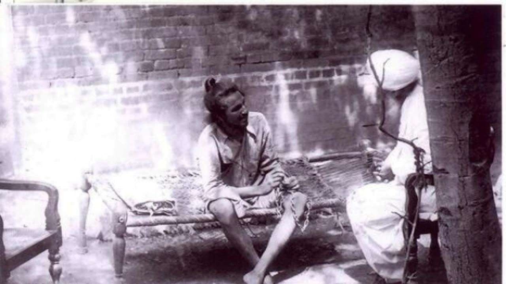

Saheed-E-Azam Bhagat Singh
Who Inspired India To Fight Back

A Rare Picture Of Saheed Bhagat Singh
LIFE TIMELINE OF SAHEED BHAGAT SINGH :
- 1907 - Bhagat Singh, a Sandhu Jat, was born in 1907 to Kishan Singh and Vidyavati at Chak No. 105 GB, Banga village, Jaranwala Tehsil in the Lyallpur district of the Punjab Province of British India. His birth coincided with the release of his father and two uncles, Ajit Singh and Swaran Singh, from jail. His family members were Sikhs; some had been active in Indian Independence movements, others had served in Maharaja Ranjit Singh's army.
- 1919 - when he was 12 years old, Singh visited the site of the Jallianwala Bagh massacre hours after thousands of unarmed people gathered at a public meeting had been killed.
- 1927 - Police became concerned with Singh's influence on youths and arrested him in May 1927 on the pretext that he had been involved in a bombing that had taken place in Lahore in October 1926. He was released on a surety of Rs. 60,000 five weeks after his arrest.
- 1929 - In 1929, he proposed a dramatic act to the HSRA intended to gain massive publicity for their aims. In 1929, the HSRA had set up bomb factories in Lahore and Saharanpur.
- 1929 - On 8 April 1929, Singh, accompanied by Batukeshwar Dutt, threw two bombs into the Assembly chamber from its public gallery while it was in session. The bombs had been designed not to kill, but some members, including George Ernest Schuster, the finance member of the Viceroy's Executive Council, were injured. The smoke from the bombs filled the Assembly so that Singh and Dutt could probably have escaped in the confusion had they wished. Instead, they stayed shouting the slogan "Inquilab Zindabad!" ("Long Live the Revolution") and threw leaflets.
- 1931 - Singh, Rajguru and Sukhdev were sentenced to death in the Lahore conspiracy case and ordered to be hanged on 24 March 1931
"Bombs and pistols don't make a revolution. The sword of revolution is sharpened on the whetting stone of ideas"
-- Saheed Bhagat Singh